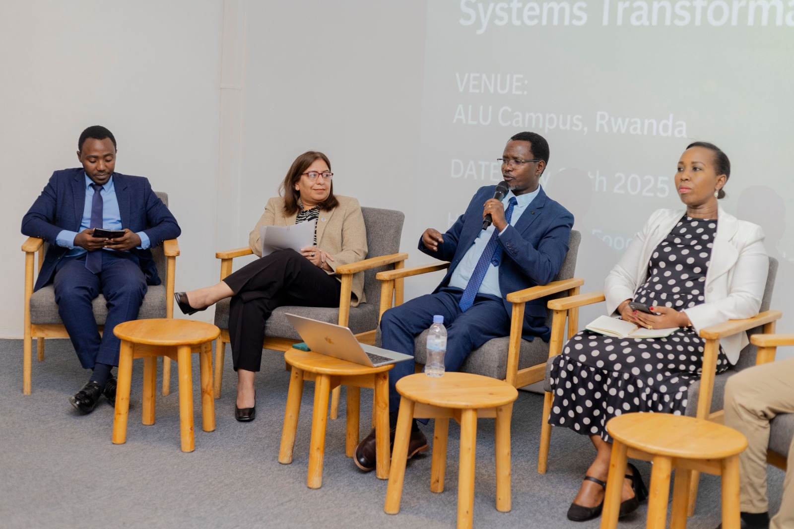
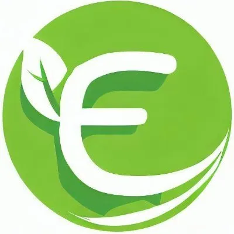
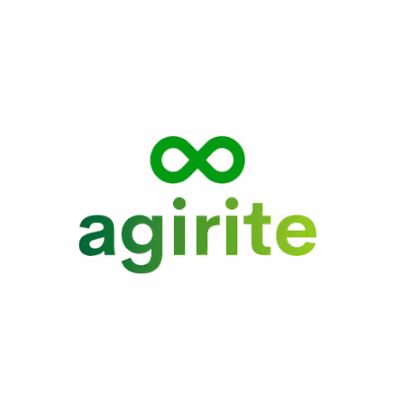
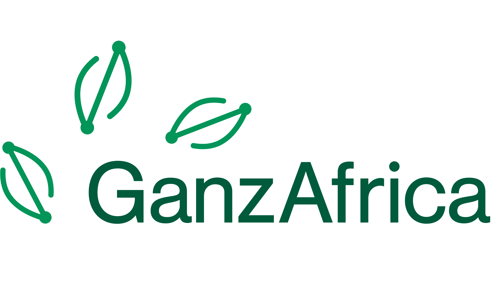
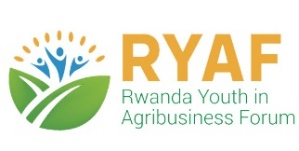
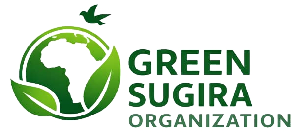
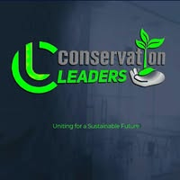
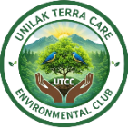

Rwanda's second Local Conference of Youth — officially approved by the LCOY Working Group under YOUNGO, the Children & Youth Constituency of the UNFCCC. A participatory, youth-led journey from every village to the global stage.
The Local Conference of Youth (LCOY) is an official youth-led process under YOUNGO. Since 2013, over 50 countries have hosted LCOYs, feeding national youth priorities into the Global Youth Statement presented at the annual UN climate conference (COP).
Rwanda's youth represent 65% of the population yet have historically lacked a structured, youth-led platform to shape national climate processes. LCOY Rwanda 2026 fills that gap — producing a validated National Children & Youth Climate Position Paper submitted to the Ministry of Environment and YOUNGO, and carried by a youth delegation to COP31 in Antalya, Turkey (Nov 9–20, 2026).
The conference is guided by six principles: youth-led, participatory, culturally grounded, inclusive by design, action-oriented, and grassroots-to-global.
Our goal: to empower young Rwandans to become active agents of climate action and influence national climate policy through a participatory, youth-led and inclusive conference process.

Climate-smart practices, agroecology, youth agripreneurship, nutrition and food security.
Nature-based solutions, forest landscape restoration and the Kunming-Montreal Global Biodiversity Framework — protecting Nyungwe, Volcanoes and Akagera.
Renewable energy access, circular economy and green employment pathways.
Disaster risk reduction, climate finance, refugees, IDPs and forced migration.
Women's climate leadership, gender-responsive action and climate policies that are accessible and equitable for persons with disabilities.
Climate education, awareness, public participation and access to information.
AI, IoT, e-waste management, biotechnology and digital tools for climate action.
Music, poetry, dance, drama, murals, waste-to-art, ceramics and storytelling for climate.
Across all eight themes, young Rwandans compete with real climate solutions. Competition outputs feed directly into the National Children & Youth Climate Position Paper and the Rwanda Youth Climate Coalition.
Climate Month launches on National Umuganda Day with community tree planting (including fruit trees), clean-ups, climate awareness campaigns and nutrition distribution across all villages.
All 30 districts30 district-level youth dialogues run continuously through the month. Each produces a local priority list feeding provincial consultations and the National LCOY.
2,100–3,000 youthUniversity-hosted gatherings elevate rural youth priorities to the national level.
A youth drafting team consolidates all inputs into the National Children & Youth Climate Position Paper.
15–20 draftersThree days in Kigali, closing with the validation of the National Children & Youth Climate Position Paper.
Lead a thematic session, workshop, panel or side event at the National LCOY Main Event in Kigali — or run an event in your province or district during Climate Month.
Primary schools, secondary schools and universities can host climate activities on their own campus during Climate Month, with trained LCOY delegates sent to facilitate.

Forest for Life
Agirite
GanzAfrica
Rwanda Youth in Agribusiness Forum (RYAF)
Green Sugira Organization
Conservation Leaders Network
UNILAK Terra Care Environmental Club